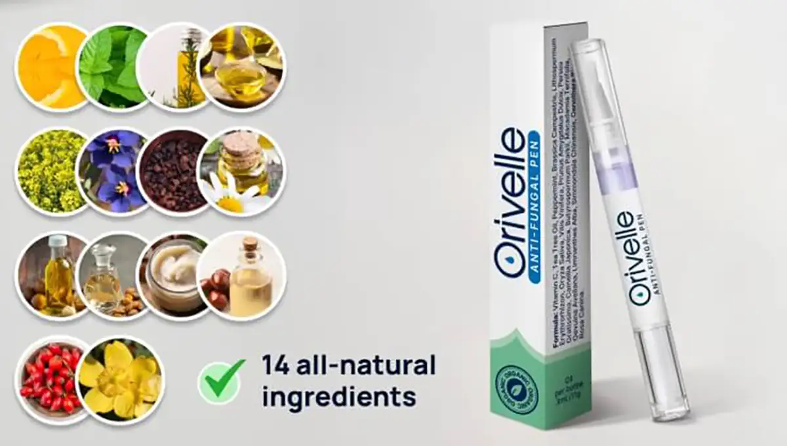

Mijn dokter zei dat het tot een jaar zou duren om mijn hardnekkige kalknagels te behandelen. Ik loste het op in 4 weken met DIT
Ik probeerde 9 verschillende "wondermiddeltjes" in 5 jaar tijd, en de schimmel kwam ALTIJD terug. Ik ben nu al meer dan 18 maanden schimmelvrij – en de oplossing was beschamend eenvoudig! Ik laat je precies zien wat ik heb gedaan.

Ik ben Kim, 37 jaar, en 5 jaar lang had ik last van gênante kalknagels die ik maar niet weg kreeg.
Ik geloof dat ik het heb opgelopen tijdens een pedicure in een nagelsalon. Ik negeerde het een paar jaar, denkend dat het vanzelf wel over zou gaan …
Maar dat gebeurde niet.
In plaats daarvan verspreidde het zich naar de volgende teen, en toen de volgende, totdat ik niet meer kon doen alsof er niets aan de hand was. Ik was ontzet.
Het voelde verschrikkelijk om naar mijn eigen voeten te kijken – ik voelde me onhygiënisch.
Mijn hele leven begon te draaien om het verbergen van mijn lelijke voeten. Op het strand begroef ik ze in het zand zodat niemand ze kon zien. Thuis droeg ik het hele jaar door sokken …
Ik sloeg pedicures met vriendinnen over en bedacht smoesjes. Elke outfit koos ik uit op basis van welke schoenen mijn tenen zouden bedekken – nooit de leuke open sandaaltjes die ik eigenlijk wilde dragen.
Het herstellen van mijn nagels werd een obsessie, dus ik besteedde de volgende 5 jaar aan het proberen van ALLES.
En als je ooit hebt gegoogeld op "hoe kom ik van kalknagels af", dan weet je waar ik het over heb …
Er zijn honderden "oplossingen". Huismiddeltjes. Pillen. Ochtendrituelen van 20 stappen die je moet volgen voordat je je schoenen mag aantrekken.
Het is een dagtaak om dat allemaal bij te houden!
En dat is het verraderlijke aan nagelschimmel – je raakt gevangen in een vicieuze cirkel. Je hoort over een "nieuwe spannende oplossing". Je probeert het. Het werkt een paar weken. Dan komt de schimmel terug.
Elke. Keer. Weer.
Het is moedeloosmakend. Na een tijdje begin je te geloven dat je hier voor altijd mee moet leven.
Maar het goede nieuws is … dat hoeft niet.
Er is ÉÉN ding dat eindelijk voor mij werkte –het maakte mijn nagels in weken schoon, niet in jaren, en ik deed het in slechts een paar seconden elke ochtend gewoon thuis.
Ik ga je meenemen door alles wat ik heb geprobeerd, wat er mislukte en waarom, zodat je de 5 jaar aan misleidend advies kunt overslaan en direct naar hetgeen kunt gaan dat je nagelschimmel snel – en definitief – kan verhelpen.

De tijdelijke oplossingen waardoor de schimmel terugkomt (verspil hier je tijd niet aan)
Ik ging naar mijn huisarts en zij zei dat het ongeveer een jaar zou duren om de schimmel te genezen.
Het eerste wat ze voorschreef was Terbinafine –en het werkte echt. De schimmel verdween zichtbaar, mijn nagels zagen er weer bijna normaal uit, en ik was zo blij dat ik dacht dat het voorbij was.
Mijn god, wat zat ik ernaast!
Nog geen 2 weken nadat de pillen op waren, kropen de gele strepen weer over mijn grote teen. Ik zat op de rand van het bad en moest huilen.
Dat was het moment dat ik alles begon te proberen …
Theeboomolie (Tea tree oil) –Elk draadje op Reddit, elke post op het Viva-forum, elk Google-resultaat zwoer erbij. Ik verdunde het met kokosolie zoals de fora zeiden, depte het twee keer per dag op met een wattenstaafje en bleef 4 maanden lang uiterst gedisciplineerd. Mijn nagels zagen er wel wat beter uit. Toen ging ik een lang weekend weg, sloeg het 3 dagen over, en tegen de tijd dat ik thuiskwam was de schimmel met een wraak teruggekomen.
Vicks VapoRub. Het maakte mijn nagels zachter en ik dacht echt dat het werkte. Totdat ik op een ochtend naar beneden keek en zag dat de schimmel naar een derde teen was verspreid.
Appelazijn-voetbaden. Elke avond 20 minuten, 6 weken lang. Mijn badkamer rook naar een frietkraam. De nagels zagen er eerst iets beter uit, bleven toen gelijk en werden daarna slechter.
Antischimmelcrèmes van de drogist –Canesten, Daktarin, Lamisil crème –ik gebruikte het trouw elke avond. Het etiket zei "resultaat in 4 weken". Voor mij was het resultaat: helemaal niets.
Listerine-voetbaden –Nog zo'n internet "wonder". 2 maanden lang gedaan. Het enige resultaat waren blauwe voeten en een badkamer die rook naar een tandartspraktijk.
Pasta van zuiveringszout. Na drie weken had ik een geïrriteerde huid, geen verbetering, en werd ik wakker met poeder in mijn lakens.
Laserbehandeling bij een privékliniek. €280 per sessie. Ik gaf meer dan €1.100 uit. De schimmel was na de volledige kuur voor ongeveer 60% weg. Zes maanden later was ik weer terug bij af.
Nagellak op recept die je elke dag moet opsmeren voor maximaal 48 weken. Ik hield het 8 maanden vol. Halverwege trok de schimmel zich ongeveer 6 weken terug. Daarna kwam het weer terug.
Elke keer als er iets mislukte, hoorde ik hetzelfde –"geef het meer tijd, wees consequenter, je moet volhouden. "
Maar ik kon me niet voorstellen dat ik de rest van mijn leven een pil zou slikken waar ik misselijk van werd, of elke dag spul op mijn teennagels zou smeren.
Er moest iets beters zijn. Iets dat echt werkte, snel, en dat voorkwam dat de schimmel terugkwam.
En dat heb ik gevonden.
Tijdens mijn zoektocht naar een echte oplossing werd ik doorverwezen naar een holistische huidexpert uit Amsterdam – Dr. Kristina Visser – die enorm succes had met het behandelen van hardnekkige huid- en nagelschimmel.
Twee weken later zat ik bij haar op kantoor.
Ze begon met het uitleggen van iets dat ik nog nooit had gehoord: schimmel is zo moeilijk te doden omdat het niet op je nagel leeft –het leeft tussen de nagel en het nagelbed.
Dat betekent dat elke plaatselijke behandeling die ik had geprobeerd – de theeboomolie, de Vicks, de Lamisil, de appelazijn – door dikke keratine heen moest dringen – de keiharde eiwitlaag waar je nagel van gemaakt is – om de schimmel überhaupt te bereiken.
En de pillen moeten de hele weg door je bloedbaan afleggen naar de piepkleine vaatjes aan de basis van je nagel voordat ze kunnen beginnen met doden.
Beide zijn ongelooflijk moeilijk te realiseren. Dat is precies waarom deze behandelingen in het begin lijken te werken – ze doden de zwakke oppervlakteschimmel die je kunt zien. Maar de resistente stammen die diep in het nagelbed begraven liggen, overleven, vermenigvuldigen zich en komen sterker terug dan voorheen.
En zelfs als een van deze behandelingen wel werkt, is het bijna onmogelijk om het perfect te doen. De standaardprotocollen vereisen maanden – soms jaren – van perfecte discipline. Sla een paar dagen over en je bent weer terug bij af.
Voor het eerst in 5 jaar klonk elk falen ineens logisch.
"Wat je eigenlijk nodig hebt," zei Dr. Visser, "zijn twee dingen die samenwerken."
- Ten eerste – een afleversysteem dat daadwerkelijk de nagelplaat kan binnendringen. Dat betekent op basis van olie, niet op waterbasis. Olie is een van de weinige stoffen die door de keratinebarrière gaat en het nagelbed eronder bereikt.
- En ten tweede – de juiste antischimmelverbindingen in die olie. De exacte combinatie van plantenextracten die samenwerken om:
- Door zelfs de dikste nagels heen te dringen
- Schimmel bij de wortel aan te pakken (niet alleen aan de oppervlakte)
- Het natuurlijke afweersysteem van je nagel te helpen herstellen
- Herinfectie definitief te helpen voorkomen
Ze opende een lade in haar bureau en overhandigde me de oplossing die 5 jaar aan geworstel in slechts 4 weken zou oplossen.

Maak kennis met Orivelle: De plantaardige nagelpen die nagelschimmel definitief elimineert
Orivelle bevat 14 krachtige botanische extracten – elk geselecteerd voor een specifieke rol bij het doden van schimmels, het herstellen van beschadigde nagels en het beschermen van de omliggende huid.

Plus Vitamine C, Pepermunt, Raapzaadolie, Druivenpitolie, Zoete Amandelolie, Karitéboter (Shea Butter), Chileense Hazelnootolie, Jojoba-olie, Teunisbloemolie en Rozenbottelolie –al deze krachtige stoffen werken samen om broze, gele en gebarsten nagels weer op te bouwen tot gezonde, mooie nagels.
Orivelle doodt niet alleen de schimmel. Het herstelt alles wat de schimmel heeft vernietigd.
Wat Orivelle anders maakt:
Crèmes:
Blijven op het oppervlak liggen, dringen niet door de nagel heen
Pillen:
Belasten de lever, werken slechts in 17% van de gevallen
Huismiddeltjes:
Te zwak, inconsistente resultaten
Orivelle:
Dringt door de hele nagel heen, bestrijdt schimmel bij de wortel en voorkomt terugkeer
"Ik kan weer sandalen dragen!" – Echte verhalen van echte mensen
Margriet K.
Geverifieerde koper
“Ik ben 67 en had 12 jaar lang nagelschimmel. TWAALF JAAR! Alles geprobeerd, inclusief die vreselijke pillen waar ik ziek van werd. Mijn dochter vond Orivelle online en kocht het voor me. Binnen 2 weken stopten mijn nagels bijna met afbrokkelen. Tegen week 4 zag ik weer roze, gezonde nagels groeien vanuit de basis. Nu, na 3 maanden, zijn mijn nagels voor het eerst in jaren bijna helemaal schoon! Ik heb net een pedicure geboekt – iets wat ik al meer dan tien jaar niet heb gedaan. Bedankt!”

VOOR – NA (8 WEKEN) · *Resultaten kunnen per persoon verschillen. Margriet K., geverifieerde klant
Linda M.
Geverifieerde koper
"8 jaar nagelschimmel weg na 6 weken behandeling"
Ik ben ZO blij!! Tegen week 6 zagen mijn teennagels er weer schoon en normaal uit. Ik ben vorig weekend direct 3 nieuwe paren sandalen gaan kopen.

Mark D.
Geverifieerde koper
"Succes met Orivelle in slechts 2 maanden!!!"
De nagels groeien roze en normaal terug bij de aanzet, geen geel meer, geen dikte meer. Ik blijf kijken omdat ik niet kan geloven dat het echt weg is. Ik kan dit niet genoeg aanbevelen.

Top podotherapeuten raden dit stilletjes aan hun patiënten aan
“Ik ben al 18 jaar podotherapeut. Toen patiënten mij hun resultaten met Orivelle lieten zien, was ik sceptisch. Maar de verbetering was onmiskenbaar. Ik raad het nu aan patiënten aan die geen orale medicatie kunnen nemen of last hebben van terugkerende infecties. Het succespercentage is opmerkelijk.”– Dr. Jan T., Podotherapeut, Rotterdam
In een onafhankelijk onderzoek onder 500 gebruikers:
Het eenvoudige ritueel van 60 seconden dat je nagels transformeert
Het gebruik van Orivelle is makkelijker dan tandenpoetsen:
- Stap 1: Maak je nagels schoon en droog
- Stap 2: Breng Orivelle aan met het precisieborsteltje (net als nagellak)
- Stap 3: Laat 60 seconden drogen
Doe dit twee keer per dag. De meeste mensen zien resultaat in 7 –14 dagen.
Geen vijlen. Geen voetenbaden. Geen gedoe.
Vergelijk de kosten: Orivelle vs. traditionele behandelingen
Laserbehandeling:
€500 –1.500 (vaak niet vergoed door verzekering)
Pillen op recept:
€400+ voor een kuur van 3 maanden (plus levertests)
Podotherapeut bezoeken:
€150+ per bezoek (meerdere bezoeken nodig)
Orivelle Pen:
minder dan €19,99 (gaat 30+ dagen mee)
Bovendien wordt Orivelle geleverd met een 30-dagen geld-terug-garantie. Als je geen verbetering ziet, krijg je je geld volledig terug. Zonder vragen.
Margriet K.
Geverifieerde koper
“Ik ben diabeet en mijn dokter zei dat ik de antischimmelpillen niet mocht nemen. Ik heb 5 jaar tegen deze schimmel gevochten met crèmes die nooit werkten. Orivelle hielp mijn nagels binnen 6 weken schoon te krijgen! Mijn vrouw heeft nog 3 pennen besteld zodat we nooit zonder zitten.”
Speciaal voor de bezoekers van onze site wordt Orivelle met korting verkocht! Klik op de "DRAAI" knop en win een korting! Veel succes!
 Check beschikbaarheid & pas korting toe →
Check beschikbaarheid & pas korting toe →
BEPERKTE voorraad met korting BESCHIKBAAR per:
Claim je EXCLUSIEVE AANBIEDING met 70% korting!
LET OP: Pas op voor namaak Orivelle producten op Amazon
Vanwege de populariteit zijn er online nagemaakte versies van Orivelle verschenen. Deze nepproducten bevatten niet de juiste concentraties aan plantenextracten en werken niet.
Koop alleen via de officiële website om er zeker van te zijn dat je de authentieke formule krijgt met de 30-dagen garantie.
Door virale aandacht op sociale media is Orivelle snel uitverkocht.
Lage voorraad resterend tegen de kortingsprijs.
Volgende zending arriveert over 3–4 weken.
Exclusief gemaakt voor elke leeftijd! Kies je leeftijdsgroep en vind de beste oplossing voor jou!
Voor leeftijden 60+
Klik hier voor70% korting!
Voor leeftijden 40 –60
Klik hier voor70% korting!
Voor leeftijden 20 –40
Klik hier voor70% korting!
Speciale aanbieding bijna voorbij: Bespaar tot 70%

Bespaar vandaag tot 70%
Als onderdeel van hun online bewustwordingscampagne biedt Orivelle onze Nederlandse lezers een exclusieve korting aan:
- 1 Pen →Bespaar 50%
- Pakket van 3 pennen →Bespaar 60% ← BESTE KEUZE
- Pakket van 6 pennen →Bespaar 70% (minder dan €10 per pen!)
Alle bestellingen zijn inclusief:
- GRATIS verzending (arriveert in 2 –3 dagen)
- 30-dagen geld-terug-garantie
- Nagelverzorgingsgids: "Schone nagels in 30 dagen"
Linda S.
Geverifieerde koper
“Twijfel niet! Ik heb JAREN en HONDERDEN euro's verspild aan behandelingen die niet werkten. Orivelle hielp mijn nagels in 8 weken schoon te maken. Ik ben 72 en draag voor het eerst sinds mijn vijftigste weer open schoenen!”
Patricia Willems
2 uur geleden
Net de mijne besteld! Mijn zus gebruikt dit nu een maand en haar nagels zien er geweldig uit. Kan niet wachten om het te proberen!
Michaël de Vries
5 uur geleden
Is dit veilig voor ouderen? Mijn moeder is 78 en tobt hier al jaren mee.
Reactie van de redactie: Ja, Orivelle is veilig voor alle leeftijden. Het is puur natuurlijk zonder agressieve chemicaliën. Veel klanten in de 70 en 80 gebruiken het met succes!
Suzanne van Dijk
Gisteren
UPDATE: Gebruik het nu 6 weken. Het verschil is ongelooflijk! Waarom heb ik dit niet eerder gevonden??? Heb er net nog 3 besteld voor mijn man.
Daan Vermeulen
2 dagen geleden
De korting werkt nog steeds! Heb net 3 flesjes gekregen voor minder dan de prijs van mijn laatste recept. Bedankt voor het delen!
Barbara Jansen
3 dagen geleden
Hoe lang duurt de verzending? Wil zo snel mogelijk beginnen met de behandeling.
Reactie van de redactie: Bestellingen worden dezelfde dag verzonden en komen binnen 2-3 werkdagen aan met gratis expressverzending!
Jan de Jong
3 dagen geleden
Ik ben verpleegkundige en was sceptisch, maar de wetenschap klopt. Na 4 weken is mijn grote teennagel bijna helemaal schoon. Ik bestel er meer!